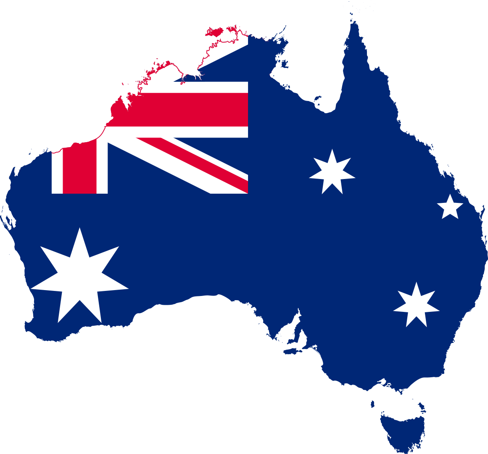

Austrália é um país lindo, com um povo receptivo e uma economia próspera. Tudo o que você precisa para ter a experiência mais incrível da sua vida.
Segundo o ranking de Desenvolvimento Humano da Organização das Nações Unidas (ONU), a Austrália está entre os países que oferecem as melhores condições de vida para seus habitantes, sempre aparecendo entre as três primeiras posições desse ranking, ocupando diversas vezes a primeira. É considerado, também, o quarto país mais feliz do mundo (Índice de Prosperidade 2012).

- Estudar
- Trabalhar
- Curtir